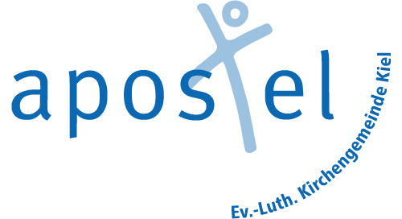
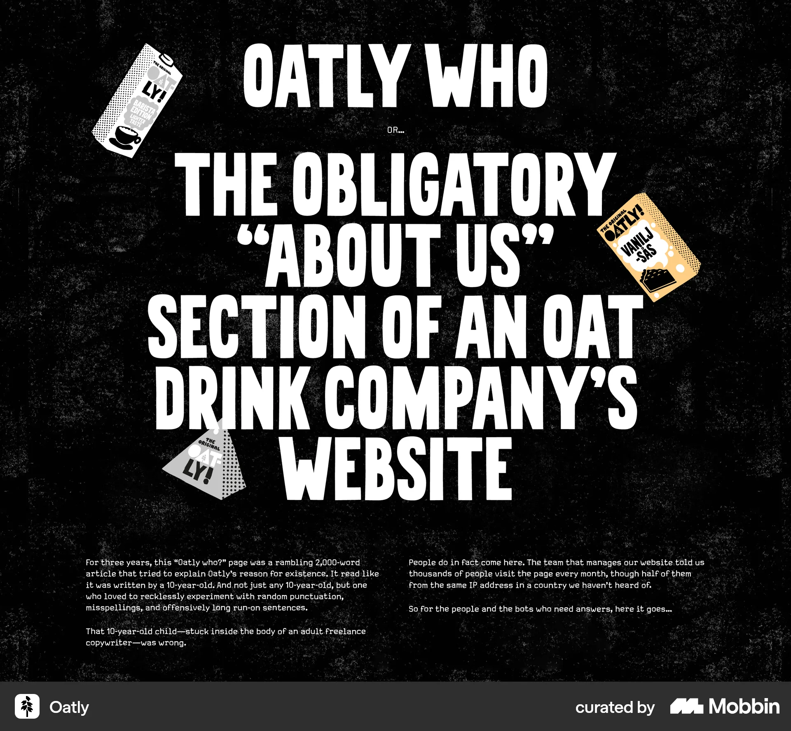
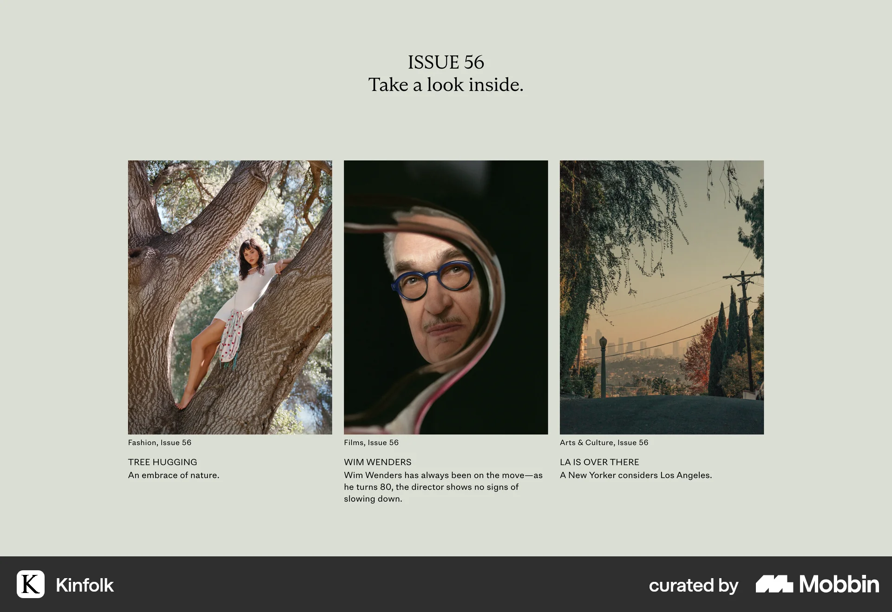
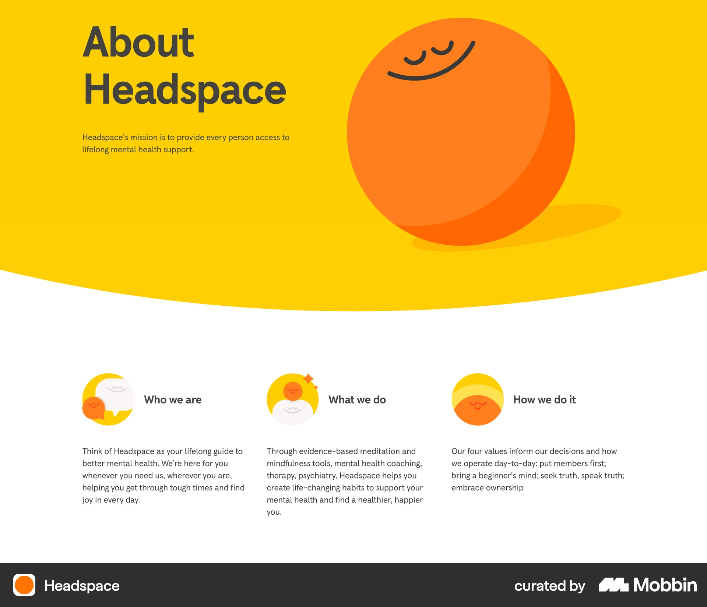

A · Das Kulturplakat
Nicht Verwaltungsportal, sondern Ort im Viertel.

Mitten
im Leben.
AKG-Schrift- und Farbprobe, keine ausgearbeitete Startseite und kein beschlossenes Gemeindemotto.
Reale Referenz: Oatly

Was daraus für die AKG wird
Eine Gemeinde, die sichtbar zum Dazukommen einlädt: typografisch wie ein gutes Kulturplakat, nicht wie eine zurückhaltende Institution.
Das übernehmen wir
Sehr schmale, große Lettern; starke Größenwechsel; Bilder als bewusste Ausschnitte statt immer derselben Bild/Text-Reihe. Kalkgelb und Schwarz dominieren, Rot setzt einzelne Akzente.
Der mögliche Seitenaufbau
Ein plakatives Wortbild als Auftakt; danach ein gut lesbarer Anschlag mit den freigegebenen Besuchswegen und Inhalten. Kein großer Begrüßungstext neben einem Foto.
Die GrenzeKann zu laut oder zu sehr nach Kampagne wirken. Großbuchstaben nur als gestalterischer Auftakt, nicht in längeren Texten. Keine fremden Verpackungen, Texte oder Logos kopieren.
B · Das Gemeindejournal
Nicht werben, sondern zum Lesen einladen.
Zeit für
Begegnung.
AKG-Schrift- und Farbprobe, keine ausgearbeitete Startseite und kein beschlossenes Gemeindemotto.
Reale Referenz: Kinfolk

Was daraus für die AKG wird
Eine Website mit dem Charakter eines sorgfältig gemachten Gemeindemagazins: Menschen, Gedanken und Fragen eröffnen die Gemeinde, nicht ein Werbehero.
Das übernehmen wir
Eine markante Serifenschrift, Papier- und Graugrüntöne, klare Bildunterschriften und Bilder mit eigener Aussage. Ruhige Textspalten statt übergroßer Sans-Serif-Slogans.
Der mögliche Seitenaufbau
Ein redaktioneller Aufmacher; weitere, unterschiedlich gewichtete Einstiege wie auf einer Magazinseite. Gottesdienste und Kontakt bleiben direkt erreichbar.
Die GrenzeKann zu distanziert oder zu exklusiv wirken. Braucht echte, freigegebene Inhalte statt erfundener Porträts, Interviews und Zitate. Keine Inhalte des Lifestyle-Magazins übernehmen.
C · Der offene Treffpunkt
Nicht förmlich, sondern nahbar und lebendig.
Nicht allein.
Miteinander.
AKG-Schrift- und Farbprobe, keine ausgearbeitete Startseite und kein beschlossenes Gemeindemotto.
Reale Referenz: Headspace

Was daraus für die AKG wird
Ein offener Treffpunkt für Menschen verschiedener Generationen: freundlich und einladend, aber weder Kindergartenästhetik noch Wellnessversprechen.
Das übernehmen wir
Breite, charaktervolle Buchstaben, warme größere Farbflächen und weichere Bildformen. Für die AKG eher Apricot und Weinrot als das Gelb und Orange der Referenz.
Der mögliche Seitenaufbau
Ein zusammenhängender, lebendiger Begegnungsraum statt einzeln gestapelter Marketingblöcke: Menschenbilder und direkte Besuchseinladungen greifen ineinander.
Die GrenzeKann zu verspielt wirken. Keine Headspace-Maskottchen, keine nachgebauten Icon-Kacheln und keine übertragene Gesundheitswirkung. Texte und Navigation bleiben erwachsen und klar.